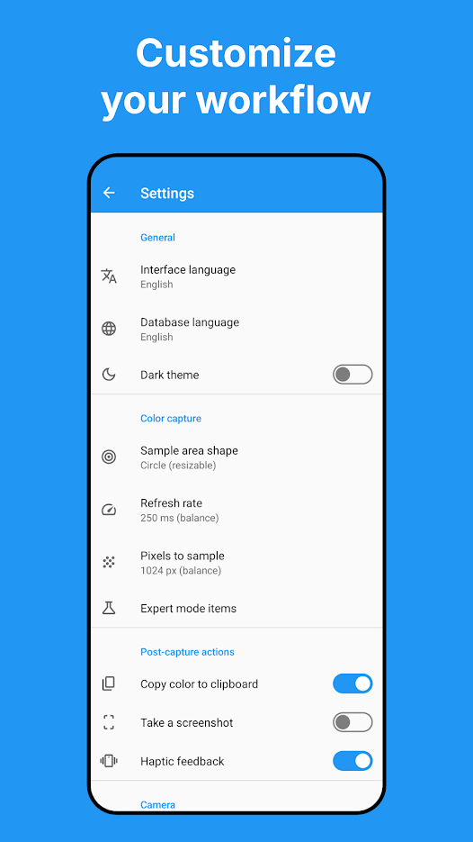
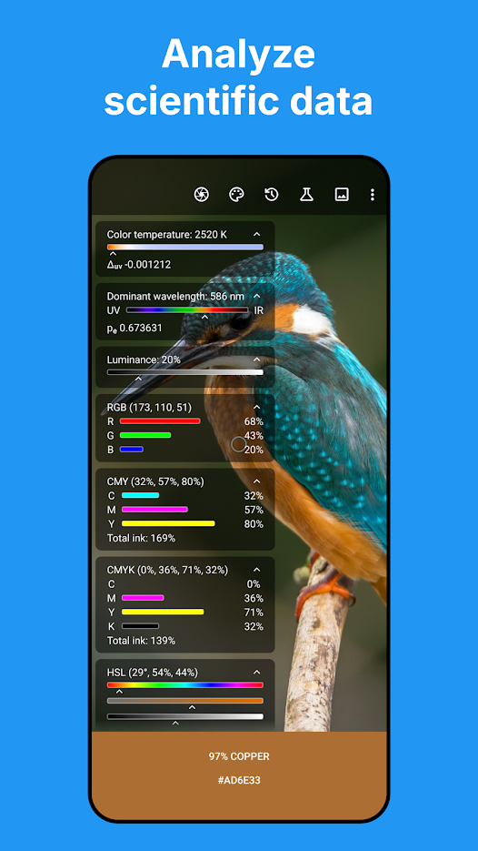

取色工具为什么大家都爱用 Color Picker——对比过三款之后的真实结论
手机端取色应用的横向对比：从基础取色到自动化能力，Color Picker 在同类里的差异化优势与适用场景。
用过几款取色工具的人都知道，这个类目长期有两个极端：一边是系统自带或大厂预装的"够用党"，界面友好但精度有限；另一边是专业色彩校准工具，功能全得像实验室但上手门槛高。Color Picker官网 恰好卡在中间——它不是最专业的，也不是最花哨的，但在"日常取色 + 偶尔需要深度读数"这个区间里，目前还没碰到对手。
它在同类里排什么位置
手机端取色这个行当，主要分三档。最低档是系统自带的取色器，iOS 和 Android 都在"辅助功能"里藏了一个，能用，但只能给个大概色值，放大也有限；中间档是专注取色的独立应用，Color Picker 属于这一档的头部；再往上就是和专业校色仪绑定的应用，那是设计师和摄影师的地盘，普通人用不上。
中间档的竞争其实不算激烈，大部分应用做到"点一下出 HEX"就停了——毕竟这已经覆盖了八成需求。Color Picker 往前走了两步，把精度和扩展性做了出来，这是它能单独拿出来说的原因。
两个别家没有的差异化点
缩放取色到像素级
图片取色的痛点大家都有过：截图里一个小 logo 或图标描边色，用大框取到的是周围颜色的混合值，放大到极限还是糊的。Color Picker 的双指缩放能把图片放到出现马赛克格子的程度，那一格就是一颗单独的像素。
这个功能听起来简单，真正做好的应用不多。很多同类应用的缩放停留在"视觉放大"，并没有把取色框缩小到对应的像素级别。Color Picker 做到了：放大后取色框自动变成点状，罩住的就是那一颗像素的真实值。配合它的点状取色框，取图标描边色、UI 细线色这种场景，误差能从一两个色阶降到几乎为零。

JSON 流——把取色变成自动化接口
这是 Color Picker 最极客的功能，也是它跟同类工具差距最大的地方。应用能在本地网络起一个小 Web 服务器，把相机实时取到的颜色以 JSON 格式推送出去。局域网内任何设备都能接收，程序直接消费，不需要人眼抄读数。细节可以翻Color Picker文档里的 JSON 流专篇，写得很清楚。
同类工具里我没见过第二个做这个的。系统自带的取色器更别提了，连分享都只能发截图。这个功能的门槛其实不高，但产品思路完全不一样——它把取色应用从"一个人用的工具"变成了"颜色传感器节点"。做粉末溶解实验的颜色曲线记录、LED 光源的色温测试、甚至自动化流程里的阈值触发，都能用上。
专家模式的物理读数
如果说前两个是"做得更好"，专家模式就是"别人家没做"。它把 RGB 像素值换算成色温（开尔文）、主波长（纳米）、纯度这些物理量——相当于给每颗颜色发了一张光学身份证。2520 K 的暖黄光、586 nm 的橙黄区光谱、0.68 的纯度，这一组数据比"深橙色"精确一个量级。
这个功能对普通人来说是超纲的，但对灯光行业、屏幕校色、摄影爱好者来说，比单纯的 HEX/RGB 有用太多。而且实现思路很干净：直接在应用里做换算，不需要外接任何设备。
为这些优势付出了什么代价
先说上手门槛。系统自带的取色器打开就能用，Color Picker 的设置项多了一倍——复制到剪贴板的开关、取色框形状、是否启用本地服务器……想尝试的话安装包从官方下载拿，第一次打开的人可能会懵一下。好在常用功能默认就开着，基础取色不需要任何配置。
再就是平台限制。它目前只在 Android 上，iOS 没有对应版本。苹果的沙盒机制让本地服务器这类功能很难实现，所以这条路基本被堵死了。如果你是 iPhone 用户，这整个评测可以直接跳过。
还有一个取舍是界面风格。Color Picker 走的是偏工具化的路线，图标和配色比较克制，没有花哨的动效。对在意颜值的用户来说可能不够吸引人，但对每天都要用的开发者和设计师来说，简洁反而不占注意力。

选购结论
什么人应该选 Color Picker？你属于下面任何一类就对了：
- 经常需要从截图或图片里取色，尤其是小色块、细线、渐变上的某一点
- 做开发或自动化，想把手机变成一个便宜的颜色传感器
- 对灯光、屏幕、色温这类物理量有实际需求，不想每次都套公式换算
- 设计师或产品，需要在手机上快速验证配色方案
什么人不应该选？只想偶尔取一个 HEX 值，系统自带的取色器完全够用，没必要多装一个应用。如果你是 iOS 用户，那也没得选。
最后说一句推荐语：Color Picker 不是取色工具里最出名的，但在"手机端 + 精度够 + 能扩展"这个组合上，目前没有替代品。它的两个差异化点——像素级缩放和 JSON 流——一个解决了精度问题，一个解决了自动化问题，叠加起来就把自己从"中间档"推到了这个类别的首选。